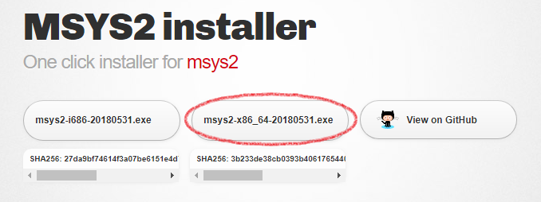
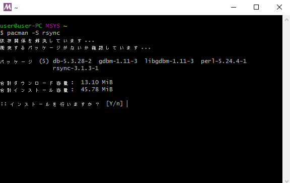
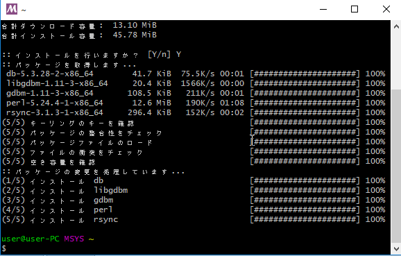
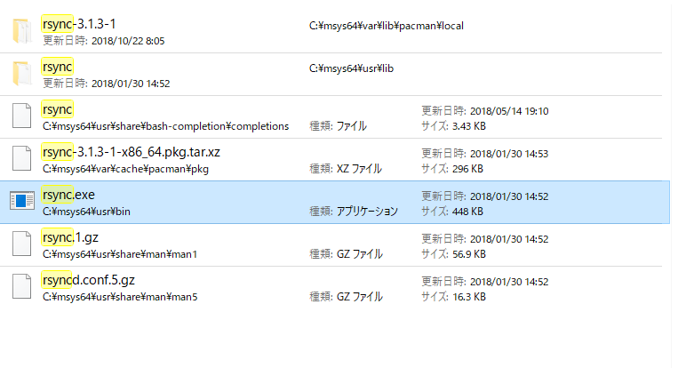
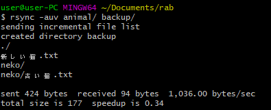
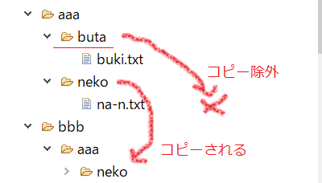

CentOSのバージョン確認方法
$ cat /etc/redhat-release
シェルのHello World! | shell
shファイルをテキストエディタなどで作成する。
作成したshファイルのディレクトリに移動し、shコマンドでshファイルを実行する。
日本語文字化けするので shファイルは
utf8で保存すること。
shファイル(hello.sh)
#!/bin/sh
echo "Hello World!"
shコマンドでshファイルを実行する
$ sh hello.sh
Hello, World!
Windows上でshファイルをダブルクリックで実行したとき、すぐにターミナルを閉じないようにする
shファイルの末尾に「cmd /k」を記述する。
#!/bin/sh
echo "Hello World!"
cmd /k
注意
改行は「
\n」にすること
Unix環境でシェルを動かすことが多く、その環境の改行は「\n」であるためである。
ローカルのシェルファイルでsshログイン後、サーバー環境のコマンドを実行する
#!/bin/sh
echo 'SSHでログインしてサーバー上のコマンドを実行します。'
ssh -l 【ユーザー名】 【ユーザー名】.sakura.ne.jp "
cd www;
pwd;
exit;
"
echo "------------ 完了"
cmd /k
出力例
SSHでログインしてサーバー上のコマンドを実行します。
/home/【ユーザー名】 /www
------------ 完了
ローカルからサーバー上のshファイルを実行する
ssh -l ユーザー名 ユーザー名.sakura.ne.jp "
sh www/rab/hello.sh;
"
シェル版（ test.sh）
#!/bin/sh
echo 'SSHでログインしてサーバー上のshファイルを実行します。'
ssh -l ユーザー名 ユーザー名.sakura.ne.jp "
sh www/rab/hello.sh;
"
echo "------------ 終わり"
cmd /k
シェルの対話式 | キーボード入力の受付
test.sh
#!/bin/sh
echo "あなたの猫の名前は何ですか？"
read neko_name
echo "あなたの$neko_nameはいい猫ですね"
cmd /k
出力
あなたの猫の名前は何ですか？
ニャーニャー
あなたのニャーニャーはいい猫ですね
GitBashでrsyncコマンドを使えるようにする
-
「rsync.exe」があれば、GitBashでもrsyncコマンドは使えるようになる。
-
「rsync.exe」を入手するため
MSYS2
をダウンロードする。
Windows10 64bitなら「x86_64...」を選択する。

-
ダウンロードしたMSYSをウィザードにそってインストールする。
-
インストールするとMSYS2のコンソールが立ち上げる。
この時点んでMSYS2を利用できる状態になっている。
-
MSYS2のコンソールで下記コマンドを実行してrsyncを使えるようにする。
pacman -S rsync


-
MSYS2をインストールした場所に「rsync.exe」があるのでコピーする。
「rsync.exe」が置いてある場所の例
C:\msys64\usr\bin\rsync.exe

-
GitBashのルートフォルダに「bin」フォルダを作成し、「rsync.exe」をペーストする。
配置の例（C:\Users\userがGitBashのルートである場合）
C:\Users\user\bin\rsync.exe
-
以上でGitBashでもrsyncコマンドが利用できるようになる。

参考サイト
rsyncコマンドでローカルからリモートに差分アップロード
$ rsync -auvz ~/git/note_prg/linux/ 【ユーザー名】@【ユーザー名】.sakura.ne.jp:www/note_prg/linux/
参考サイト
rsyncコマンドのコピーにおいてコピー除外を指定する。
例）
aaaフォルダをbbbフォルダにコピーする際、butaフォルダだけコピー対象から除外する。
rsync -auvz --exclude='buta/' aaa bbb

変数を使う
neko='ネコ'
echo $neko
※「=」の前後にスペースを入れないこと。
シェルに引数を渡す
$ sh test.sh 猫 犬
test.sh
#!/bin/bash
echo $0
echo $1
echo $2
echo $#
cmd /k
出力
test.sh ←シェル名
猫 ←第一引数
犬 ←第二引数
2 ←引数の数
ターミナル(GitBash)でphpコマンドを使えるようにする | Windows環境
Windows 10 で検証。
- Windowsの左下から「環境変数」で検索し、「システム環境変数を編集」を開く。
- 「システムのプロパティ」が開くので「環境変数」ボタンを押す。
- 上段の一覧にて「Path」を選択し、編集ボタンを押す。
- 新規ボタンを押し、「C:\xampp\php」を入力。(php.exeのディレクトリパスを指定)
- OKボタン
- PCを再起動
- ターミナルを立ち上げ、「$ php -v」をコマンド入力する
- phpのバージョン情報が表示されたら成功。
xxx
- ホーム
- プログラミングの覚書
- Linuxの覚書